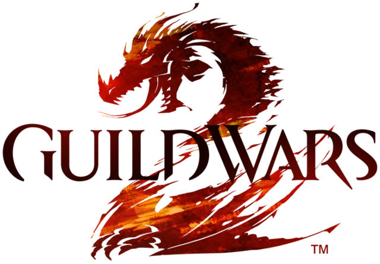

Análisis de Encuentro
Sube tu archivo de ArcDPS (.zevtc) para procesar por lotes.
📈 Capa Gold - Historial de Combates
Datos procesados previamente y sincronizados desde Databricks.

WvW Combat Performance
Sube tu archivo de ArcDPS (.zevtc) para procesar por lotes.
Datos procesados previamente y sincronizados desde Databricks.